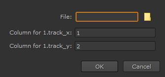
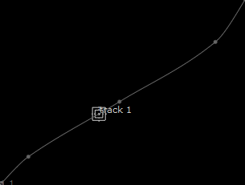

您可以使用包含每行、帧、 x 和 y 坐标三个值的纯文本文件从第三方软件导入跟踪数据。跟踪器可以读取值以空格、逗号或冒号分隔的文件，以及以 # , ; ,和 / 被忽略。例如，导入包含以下内容的文件:
# 跟踪数据 1,1，1 10,240,240 50,1000，700 90,1800，1200 100,2048，1556
在 1 、 10 、 50 、 90 、 100 帧处生成五个关键帧，其中包含相关的 x 、 y 坐标。
提示: 如果您定期使用特定的文件格式，您可能需要创建自己的导入程序来解析 。Txt 文件。您可以使用 <Install_dir>/插件/import_discreet.tcl 文件作为如何做到这一点的指南。
要导入跟踪数据:
| 1。 | 如中所述，添加跟踪锚点 添加轨迹锚 . |
这增加了一个轨道，轨道表中 属性 面板。
| 2. | 右击新轨迹并选择 文件 > 导入时间 + 值 Ascii . |
的 进口谨慎 对话框显示。

| 3. | 在中输入文件路径和文件名 文件 字段。 |
| 4. | 设置包含 x 和 y 坐标数据的所需列。 |
| 5. | 单击 好 要导入轨道。 |
文件中的点将转换为关键帧并显示在查看器中。关键帧之间的轨迹按正常方式插入。前面描述的五个关键帧示例文件生成与下图类似的轨迹。

|
|